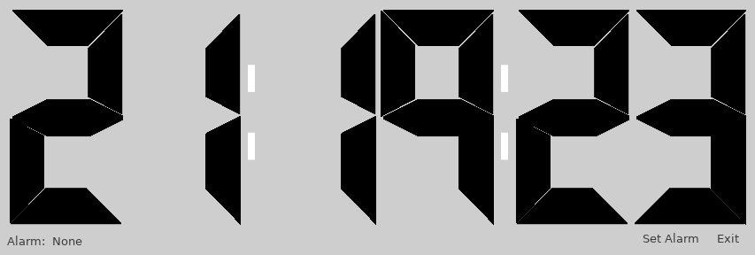

This is an alarm clock that is capable of waking the system from sleep before
the alarm occurs.
The control of the RTC needs suid root, so start this as a suid program.
chmod u+s pyclock.py
The other possible arrangement is giving your user access to the RTC by
allowing your user to control /dev/rtc0 (or whatever your system is configured as)
(note: udevd makes it harder to accomplish this)
Click on the mini button at the lower right corner region titled
"Set Alarm".
The LCD changes color, and one can drag up or down on the digits to change time.
When done, click on the 'Set Alarm' button again.

We recommend suid, because trying to start a GUI program as root may be challenging.
Most subsystems resist running as root. For instance, sound may not play,
or the graphical system may not work as intended. This is actually a good thing,
protecting system integrity.
Set alarm 3 minutes rom now. Put the system to sleep with the 'Sleep' or 'Suspend' or
'Hibernate' button. The system wakes 30 seconds before the alarm time is due.
Alarm should sound for 5 separate repeats. Click on the "Close Alarm" button to
stop alarm sound.
On linux, the RTC operates on UTC standard time. The values are translated
back and forth between RTC and LOCAL time transparently. However, this
might cause complication at dual boot with windows etc ... This is not a
limitation of pyclock, rather the underlying systems.
The program has no move / minimize arrangements, use the window manager's
facilities to control that. (toolbar -> right click -> move.. etc)
The LCD is a (crude) version of the one I created a decade ago. Most useful as it
scales nicely and can display hexadecimal digits as well. Note the rollover features
are implemented as callbacks.
Alarm Clock with big LCD
Usage: pyclock.py [options]
options:
-d --debug pgdebug - Debug level. 0=none 10=noisy. Default: 0
-a --alarm alarm - Set alarm time. Format: HH:MM Autowrap OK.
-q --quiet - Quiet. Show less info.
-v --verbose - Increase verbosity.
-V --version - Print Version string.
-h --help - Show Help. (this screen)
This program will set the RTC wake time as well.
The alarm is set with the option -a HH:MM in 24 hour notation. If alarm is
set to time before the current time, it auto wraps to the next day.
(Dialog displayed if autowrap was needed)
playsound3, pyvguicom, pygobject, cairo
use: pip install playsound3 ...
// EOF